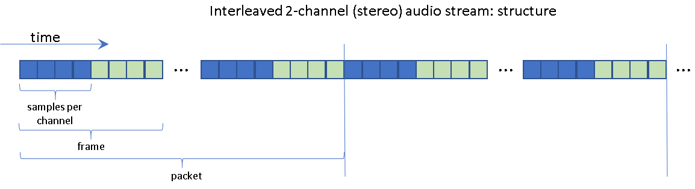

Audio setup and configuration
For in-depth information on audio routing, implementing your own audio driver and much more information on audio in general, please consult the audio SDK user guide.
That said, let us take a look at some audio basics below.
Briefly, audio input is handled using “audio paths” that consist of chains that may be built up from several parts. Each chain defines a sequence of stages that the audio samples go through, where in each stage they are processed before being passed on to the next stage.
The simplest audio path would be audio input from file, which is then directly fed into a recognizer, with no real processing along the way. A more complex audio path could involve echo cancellation (eg. to remove background music from the audio stream) between the audio input and the recognizer. An audio path for remote recognition would involve stages such as up- or downsampling, echo cancellation, encoding, and buffering, before the audio data is passed to a recognizer on a remote server.
Audio paths are grouped into audio scenarios. Audio scenarios are named, and can be activated by the application by name, without needing to be explicitly created component by component.
Audio Scenarios
As described above, audio scenarios tie together the components listed below into chains, which can be instantiated to create actual input-to-ASR audio chains for different purposes. Note that audio scenarios are named, and that several audio scenarios can be used in parallel, for example a simple one for local processing, and a more complicated one for remote processing.
The simplest, and also smallest, audio path definition uses input from file, which is directly fed into the recognizer:
"audio_scenario": [
{
"name": "file",
"audiopaths": [ [ "test_file", "rec" ] ]
}]
The value for the audiopaths key is an array of arrays: each
element (array) in the “top-level” array is an audio path. When a path
is instantiated, the components are chained in the order they appear
in the array. Then final component in the path is the actual
recognizer (called rec here; it is typically defined in a
recognizer.json configuration file).
Activating an audio scenario is part of the setup process before
starting a recognition. It is done using the API function
nuance_audio_IAudioManager_activateScenario. (In the one-shot-WuW
sample: here.)
Components
The components discussed below (except for the AudioManager) take an input audio stream, and produce a processed output audio stream. Some of their configuration parameters will reference the structure of the audio stream they receive or produce. The image below shows visually how an audio stream is structured (a stereo stream in the example), and what the parts are called:
{kind=link}
The terms “sample”, “frame” and “packet” denote progressively larger chunks of the audio stream:
sample denotes a single audio sample. In the context of Cerence ASR, a sample is a 16-bit, signed, little endian number, unless specified otherwise.
samples per channel denotes a consecutive group of samples from the same channel. Often samples are always interleaved:
LRLRLR...
However, there are also many cases where several samples from the same channel are grouped:
LLLLLRRRRRLLLLLRRRRR...
The samples per channel number states how many samples from the same channel the stream contains before switching to the next channel.
A frame is a grouping of one “samples per channel” group for all the channels in the stream.
A packet is a number of frames grouped together. Often, the packet size will correspond to the amount of data that a component can process at once.
AudioManager
The Audio manager (IAudioManager) processes the audio
configuration elements found in the JSON files in the configuration
directory, and handles the creation and destruction of all audio
components required by the audio chain configurations.
All of the components described below have to be registered with the
Audio manager before they can be used in an audio chain configuration.
In the C API section, you can check the example code to see how this is generally done.
Basically, the API for each component type has a ..._registerFactory
function. This function will register a factory with the Audio manager
that can create components of that specific component type. This factory
then enables the Audio manager to handle the creation of components
of that type, as required by the audio chains configured in the
audioconfig.json configuration file.
This also applies for internal audio paths (such as the cloud
audio path). The registration of the component
factories for component types used in the internal paths is not
handled automatically, so applications using internal audio paths must
also register the components required by these internal paths, even if
they are not used in audio chains configured in audioconfig.json.
Audio Input
There are two possible input sources for audio: reading samples from file, and reading samples from an external source. An external source can be a microphone connected in some way to the system, a pipe from another process or application, etc.
A file input component can be configured as follows:
{
"type": "AudioFromFile",
"name": "test_file",
"audio_files": "../data/sound/enu_f16/hello_dragon_shuffle_nevermind.wav",
"audio_format": { "uses": "16khz_1ch" }
}
Note that in this example, the audio_files key contains a string
that points to a single file. If this string points to a path instead,
then the AudioFromFile component will cycle through all the audio
files found in that path.
The audio_format key describes the format of the samples that will
be read from the file(s). The audio formats are defined as follows in
the JSON configuration:
"audio_format": [
{
"name": "16khz_1ch",
"sample_rate": 16000,
"samples_per_channel": 1024,
"channel_count": 1
}]
In this example, the 16khz_1ch format is defined as described: the
sample rate is 16khz, and it is a mono signal.
Microphone input is more complicated, because it leans on the target platform’s low-level audio implementation. The audio input JSON definition itself is not complicated:
{
"type": "AudioInput",
"name": "mic_input",
"adapter_type": "CUSTOM_AUDIO",
"adapter_params": {
"device_name": "default"
},
"audio_format": { "uses": "16khz_1ch" }
}
The audio format specification is the same as in the file input
case. Instead of a file name or a path, however, the audio input makes
use of an IAudioInputAdapter to provide the audio samples.
The audio input adapter is to be implemented by the application developer, and provides the bridge between the platform’s low-level audio implementation, and Cerence ASR’s audio chains.
An audio input adapter requires essentially the implementation of a set of callback functions:
struct _vtable_nuance_audio_IAudioInputAdapter
{
FUNC_nuance_audio_IAudioInputAdapter_configure configure;
FUNC_nuance_audio_IAudioInputAdapter_open open;
FUNC_nuance_audio_IAudioInputAdapter_start start;
FUNC_nuance_audio_IAudioInputAdapter_stop stop;
FUNC_nuance_audio_IAudioInputAdapter_resume resume;
FUNC_nuance_audio_IAudioInputAdapter_close close;
FUNC_nuance_audio_IAudioInputAdapter_getErrorText getErrorText;
FUNC_nuance_audio_IAudioInputAdapter_destroyAdapter destroyAdapter;
};
So you implement functions to configure the audio input source, to open it, to start/stop/resume/close the audio capture, and to clean up the adapter and to retrieve the error message if anything goes wrong.
An example of an implementation for win32, called the
CUSTOM_AUDIO, can be found in the SDK sample source
code. Section Implementing a custom audio input adapter provides more
details about this implementation.
Audio Buffer
The audio buffer component provides a buffer of configurable size at the position in the audio chain where the audio path puts it. It is configured as follows:
{
"type": "AudioBuffer",
"name": "INT_rec_csHttp_buf",
"buffer_time": 110000
}
The “buffer_time” key specifies the minimum amount of audio the buffer must be able to store, in milliseconds. The minimum buffer time is 100ms, the maximum time is 2 minutes (120000ms).
The size of the buffer is determined based on the require buffer time, the sample rate of the input signal, and number of channels in the input signal.
Refer to the NDS Audio documentation for full details:
Audio Encoder
The audio encoder component will encode raw PCM audio into an
OPUS-encoded bitstream. A typical JSON configuration snippet (e.g. for
inclusion in audioconfig.json) looks like this:
{
"type": "AudioEncoder"
"name": "INT_rec_csHttp_enc",
"encoder_type": "OPUS",
"encoder_param": { "block_time":20, "complexity": 10, "bit_rate": 28000 },
"container_type": "OGG",
"container_param": { "page_time":100 }
}
The component takes a few parameters, such as complexity and the
target bit_rate. It normally also uses an OGG container as
well. (The default container type, when container_type and
container_param are omitted, is NONE, however it is advised to
use the OGG container unless you have specific reasons not to.)
Refer to the NDS Audio documentation for full details:
Speech Signal Enhancement (SSE)
There are several different operations the SSE component can perform:
noise reduction
applying echo cancellation.
If you are recording audio from a microphone in a car, and the car radio is playing music at the same time, then the audio signal from the microphone will contain (a somewhat distorted version of) the audio from the radio as well. The SSE component can subtract the radio audio from the microphone audio, so that the radio sound is much reduced, and less likely to interfere with the speech recognition.
combining signals from several microphones
The SSE component can process several parallel audio streams, and create a single stream from them. From these, it is possible to locate an audio source (speaker) relative to all microphones, and selectively amplify this audio source. This is called beam forming.
…
What the SSE module does with the incoming signals is defined in a
.scd configuration file. These configuration files are highly
specific to the acoustic environments for which they were created, so
generally they cannot easily be used to process signals from another
environment.
A simple SSE component definition looks like this:
{
"type": "SpeechSignalEnhancement",
"name": "sse_test_api",
"sse_config_file": "sse/DD_SDK_simple_tuning.scd",
}
where sse_config_file points to the SSE configuration file that is
to be used.
Refer to the NDS Audio documentation for full details:
Sample Rate Converter
The sample rate converter (SRC) component takes an input signal with a specific sample rate, and converts it into an output signal with a different sample rate. The input signal can have any number of channels. The output signal will have the same number of channels; it does not change the number of channels in the signal. (If that is what you need, the SSE module can do that.)
The configuration of an SRC module is done like this:
{
"type": "SampleRateConverter",
"name": "INT_rec_csHttp_src",
"filter_scope": "SRC_FILTER_SCOPE_AUDIBILITY",
"audio_format": { "uses": "16khz_1ch" }
}
You specify the type of conversion by setting a filter scope. There are three possible filter scopes. The first two are built-in and can be used out-of-the-box; the third one needs an additional external configuration file:
SRC_FILTER_SCOPE_AUDIBILITYSRC configuration for the audibility use case.
SRC_FILTER_SCOPE_RECOGNITIONSRC configuration for the recognition use case.
SRC_FILTER_SCOPE_PROJECT_SPECIFICThis filter scope makes it possible to use a custom configuration for the sample rate converter. It requires the use of an external configuration file, which can be configured using the additional JSON configuration key
filter_file.It is not possible to make a filter configuration yourself; please contact Cerence if you think there is a need for a custom filter scope.
Refer to the NDS Audio documentation for full details:
Audio processing path for Cloud ASR
When using off-board recognition, the ASR component sets up an internal audio path. This includes activating a built-in audio scenario using the main audio manager from the common component. The following diagram illustrates this internal audio path.
The audio data that are sent to the ASR component are put into the internal audio path via an audio adapter. The subsequent audio processing includes noise reduction (using an instance of the SSE), audio encoding (e.g. OGG/OPUS) and finally transferring the audio data to the server with the CloudServices module.
The audio modules which are needed for this processing chain are created and connected under the hood in the ASR component. The naming scheme for these internally created audio modules is:
INT_<component_inst_name>_<module_inst_name>
where <component_inst_name> is the application-dependent part and
module_inst_name are fixed built-in names. The
<component_inst_name> part is put together at runtime from the
recognizer instance name and the CloudServices configuration name.
In a customer project, expanding the <component_inst_name>
requires the name of the recognizer instance handed in at creation, as
well as the name of the cloud services component. The name of the
recognizer instance is identical to the name used in the audio
scenario configuration (in audioconfig.json). The name of the
cloud service can be found in the CloudServices JSON configuration.
For example, in the diagram shown above the recognizer instance name
is asr and the CloudServices name (defined in the JSON
configuration) is cloud so that <component_inst_name> is
instantiated with asr_cloud in this example. The
<module_inst_name> parts are fixed to: sse, enc, ao,
buf, src so that the following audio module names will be
created in this example:
INT_asr_cloud_sse (SSE)
INT_asr_cloud_enc (AudioEncoder)
INT_asr_cloud_buf (AudioBuffer)
INT_asr_cloud_src (SampleRateConverter)
These internally created audio module names will occur in log files when running cloud ASR applications, for example:
00:00.124 INFO: [7596] nuance.audio.AudioManager.MAIN registerAudioModule() audio module "INT_asr_cloud_sse" registered successfully.
It is also possible to log audio from these internally created audio
modules, using the standard audio logging name conventions. For
example, to log the audio that is coming out of the SSE module, you
need to add a log consumer to the logger JSON configuration with
"modules" set, in this example case, to
"nuance.audio.SourcePad.INT_asr_cloud_sse", e.g.:
{
"version": "Common 1.0",
"logger": {
"...": "...",
"consumers": [
{
"name": "asr internal sse output log",
"output": "./sample_INT_asr_cloud_sse_output_16kHz.pcm",
"modules": "nuance.audio.SourcePad.INT_asr_cloud_sse",
"zones": "LOG_DATA"
}
]
}
}
Note: it is very important to not use these internal reserved audio module names when defining an external audio configuration. Failing to do so will result in undefined behaviour.
On the other hand, if it becomes necessary to change the default configuration of any of these internal audio modules, then this can be done by adding a configuration for the internal module to the JSON audio configuration. This will overwrite the default built-in configuration of the module, e.g. the following example changes the OGG/OPUS encoding parameters of the ASR internal audio encoder module:
{
"module_config": [
{
"type": "AudioEncoder",
"name": "INT_asr_cloud_enc",
"encoder_type": "OPUS",
"encoder_param": { "block_time": 20, "complexity": 5, "bit_rate": 28000 },
"container_type": "OGG",
"container_param": { "page_time": 80 }
}
]
}
Another example for changing built-in default settings might be the
project-specific reconfiguration of the SSE noise reduction. This can
be achieved by adding a module configuration for
INT_<module_inst_name>_sse to the audio JSON configuration and
setting project-specific SSE configuration data.